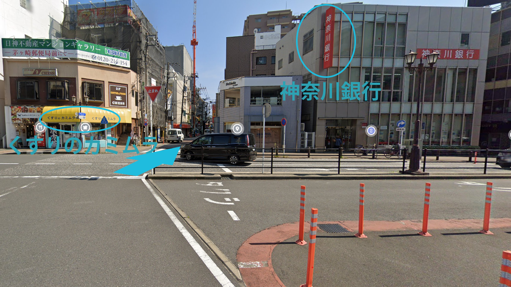
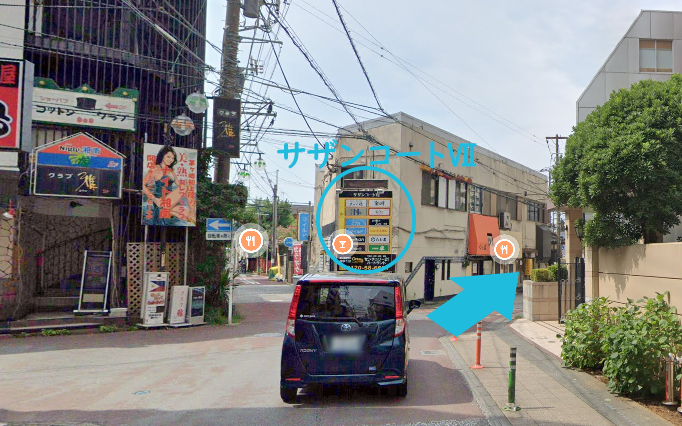
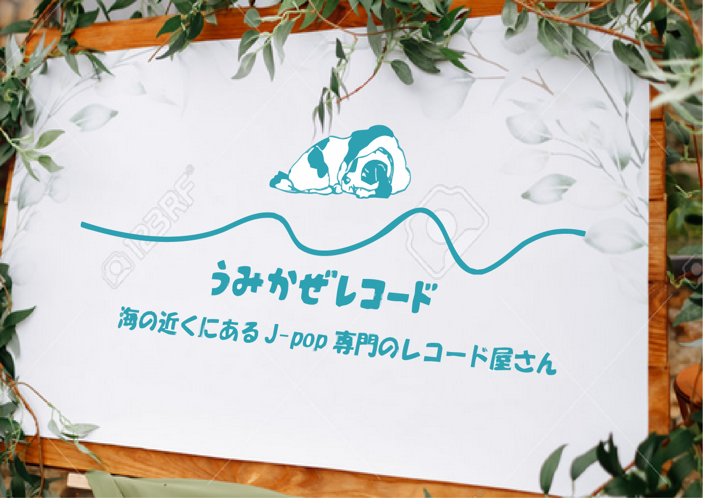

アクセス
最寄り駅：茅ヶ崎駅（JR東日本 相模線・東海道本線）から徒歩12分
駅からのルート
①茅ヶ崎駅南口のロータリーに出ます。
②くすりのカミムラ（黄色の看板）と神奈川銀行（赤色の看板）の間にある道を進みます。
③進んでいくとサザンコートⅦというテナント看板が見えます。
そこが分かれ道になっていますので、右斜め前の方へ進んでください。
④ひたすら真っ直ぐ進んでいく（途中左手に図書館が見えます）と、お店の看板が右手に見えてきます。
看板付近の扉が入り口となっておりますので、そちらからお入りください！


